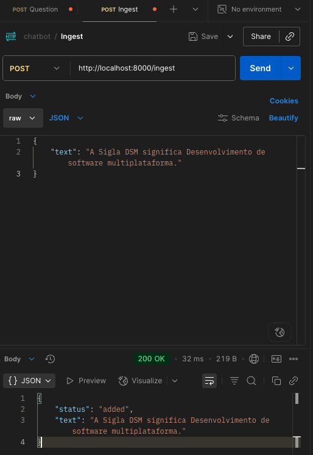

Sistema de chatbot inteligente com RAG (Retrieval-Augmented Generation) para responder perguntas sobre a grade curricular do curso de Desenvolvimento de Software Multiplataforma (DSM).
Este projeto implementa um chatbot baseado em RAG (Retrieval-Augmented Generation) que utiliza:
O sistema carrega automaticamente a base de conhecimento sobre a grade DSM e responde perguntas de forma contextualizada.
O sistema RAG (Retrieval-Augmented Generation) foi implementado em 3 etapas:
Na inicialização, o sistema:
dsm_data.txt com a grade curricularsentence-transformers/all-MiniLM-L6-v2# Exemplo simplificado
vec = embedder.encode([chunk], normalize_embeddings=True)
index.add(vec)
documents.append(chunk)Quando uma pergunta chega:
q_vec = embedder.encode([question], normalize_embeddings=True)
D, I = index.search(q_vec, 1) # Top-1 similar
context = documents[I[0][0]]prompt = f"""Use o contexto abaixo para responder à pergunta de forma clara e direta.
Contexto:
{context}
Pergunta:
{question}
Resposta:"""max_new_tokens=200: Respostas concisastemperature=0.7: Equilíbrio entre criatividade e precisãotop_p=0.9: Nucleus sampling para qualidadedsm_data.txt# Criar ambiente virtual
python -m venv .venv
# Ativar ambiente
.venv\Scripts\activate # Windows (PowerShell)pip install -r requirements.txtNota: A primeira execução baixará os modelos (~3GB). Aguarde a conclusão.
uvicorn app:app --reload --port 8000Você verá as mensagens:
🔄 Carregando modelo...
📚 Carregando dados do arquivo dsm_data.txt...
✅ Pré-ingest concluído! X documentos indexados.A API estará disponível em: http://localhost:8000
O sistema já vem com a base DSM pré-carregada. Basta fazer perguntas!
Exemplo de requisição:
POST http://localhost:8000/ask
Content-Type: application/json
{
"question": "Quais são as disciplinas do 1º semestre?"
}Mais exemplos estão disponíveis no arquivo request.http
Caso queira adicionar informações adicionais:
POST http://localhost:8000/ingest
Content-Type: application/json
{
"text": "Texto adicional sobre o curso DSM..."
}GET http://localhost:8000/healthUsuário: "Quais são as disciplinas do 1º semestre do curso DSM?"
Chatbot: "O 1º semestre do curso DSM possui 6 disciplinas: IAL010 – Algoritmos e Lógica de Programação, ISO011 – Sistemas Operacionais e Redes de Computadores, IBD014 – Modelagem de Banco de Dados, ISW028 – Desenvolvimento Web I, IES011 – Engenharia de Software I, e ISW031 – Design Digital."
Usuário: "O que é ensinado em Algoritmos e Lógica de Programação?"
Chatbot: "IAL010 – Algoritmos e Lógica de Programação é a disciplina fundamental que ensina os conceitos básicos de algoritmos, estruturas de controle, variáveis e lógica de programação. É a base para o desenvolvimento de software no curso."
Usuário: "Quais disciplinas de banco de dados tem no curso?"
Chatbot: "O curso DSM possui três disciplinas de banco de dados: IBD014 – Modelagem de Banco de Dados no 1º semestre, que ensina diagrama entidade-relacionamento e normalização; IBD015 – Banco de Dados Relacional no 2º semestre, focado em SQL e PostgreSQL; e IBD016 – Banco de Dados Não Relacional no 3º semestre, que estuda MongoDB e bancos NoSQL."
Usuário: "O que é estudado em Desenvolvimento Web II?"
Chatbot: "ISW029 – Desenvolvimento Web II é uma disciplina do 2º semestre que avança no desenvolvimento web com frameworks JavaScript modernos como React, Vue.js ou Angular, além de trabalhar com APIs RESTful e arquitetura frontend."
Usuário: "O que é MongoDB e em qual semestre é estudado?"
Chatbot: "MongoDB é um banco de dados NoSQL estudado na disciplina IBD016 – Banco de Dados Não Relacional, oferecida no 3º semestre do curso DSM. A disciplina aborda modelagem de dados não relacionais, escalabilidade e performance em bancos NoSQL como MongoDB, Redis e Cassandra."
O sistema carrega automaticamente a base de conhecimento DSM na inicialização.
Projeto desenvolvido como atividade da disciplina de Processamento de Linguagem Natural (PLN).
Repositório: lucasdwn/pln-atv1